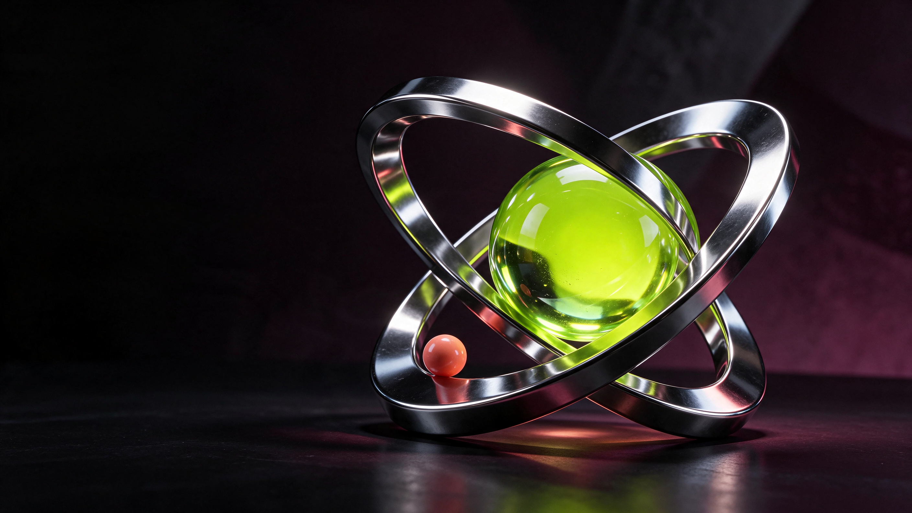

Make the
scroll feel
something.
A curious little library of scroll-led ideas, tiny experiments, and ready-to-play code for the web in motion.
BETWEEN THE LINES

STUDY 001 · FORM IN FLUX Scroll a little.See what shifts.
motion / alive
INTENTION
OF BIG FEELINGS ↘
PICK A PATH, ANY PATH
A little motion
goes a long way.
Thoughtful, buildable recipes for pages that respond, reveal, drift, and surprise. Choose a feeling. Find your starting point.
No studies found. Try another feeling or category.
A FEELING, NOT A FRAMEWORK
How much
should it move?
Drag the dial. Watch the little world shift. The best motion is the kind that knows when to hush.
WITH CARE
YOURSELF
A NOTE BEFORE YOU GO
Motion with
a reason.
Animation isn't confetti. It's a little bit of direction, a moment of anticipation, a way to help a story land.
Find your next studyGive it a
job to do.
Guide the eye. Mark a change. Reward curiosity. If it doesn't do one of those, let the page breathe.
Leave room
for the human.
Honor reduced-motion settings. Keep the message clear. Make every flourish feel like an invitation.
THAT'S THE WHOLE IDEA